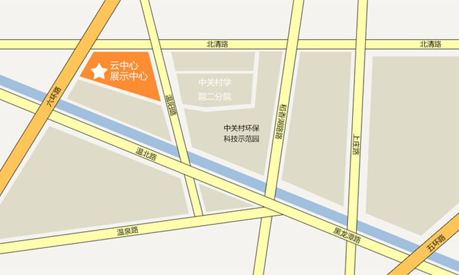

北京市海淀区温泉辛庄北中关村学院二分院
58447031 58447030 15321575023
1019959019 1718693915 138259017
北京站到中关村学院二分院乘车路线 :在北京站坐地铁2号线北京站上车到西直门换乘地铁4号线到北宫门下车，乘坐330路或968路到温泉辛庄北站下车，步行271米即到
北京北站到中关村学院二分院乘车路线 :在北京北站乘坐地铁四号线西直门上车到北宫门下车，乘坐330路或968路到温泉辛庄北站下车，步行271米即到。
北京南站到中关村学院二分院乘车路线 :在北京南站乘坐地铁四号线北京南站上车到北宫门下车，乘坐330路或968路到温泉辛庄北站下车，步行271米即到。
北京西站到中关村学院二分院乘车路线 :在北京西站乘坐地铁9号线到国家图书馆换乘地铁4号线到北宫门下车，乘坐330路或968路到温泉辛庄北站下车，步行271米即到。
北京东站到中关村学院二分院乘车路线 :在四惠桥乘坐特9路外环到中关村西下车，换乘384路到西北旺下车，乘坐968路到温泉辛庄北站下车，步行271米即到
北京首都国际机场到中关村学院二分院乘车路线 :在机场乘坐机场大巴上地、奥运村线（机场6线）到上地智选假日酒店下车，在上地三街东口乘坐328路到回民公墓下车，换乘330路到温泉辛庄北站下车，步行271米即到。
